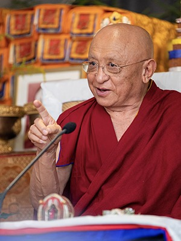

Founder and Honorary President
Chökyi Nyima Rinpoche
Abbot of Ka-Nying Shedrub Ling in Kathmandu since 1976, founder of Rangjung Yeshe Institute, and author of Present Fresh Wakefulness.
Full bio
Chökyi Nyima Rinpoche is a world-renowned teacher and meditation master in the Kagyu and Nyingma traditions of Tibetan Buddhism, and the inspiration from whom this university draws its deepest vision. Born in Tibet in 1951 as the eldest son of the revered Dzogchen master Tulku Urgyen Rinpoche, he was recognized in early childhood as the seventh incarnation of the meditation master Gar Drubchen, and studied under some of the most illustrious teachers of the age, including the 16th Karmapa and Dilgo Khyentse Rinpoche. Since 1976 he has been abbot of Ka-Nying Shedrub Ling, one of Nepal’s largest monasteries, near the Great Stupa of Boudhanath in Kathmandu.
Rinpoche’s life has been devoted to a single aspiration that this university now carries forward: that contemplative wisdom be made genuinely available to the modern world, with rigor and without dilution. In 1997 he founded the Rangjung Yeshe Institute, which combined traditional shedra training with contemporary academic scholarship and, in partnership with Kathmandu University, became an accredited center granting degrees in Buddhist studies. He has established a global network of Gomde meditation centers — including in Austria — and Dharma House city centers across Europe, the Americas, and Asia, and through the Shenpen charitable foundation has supported education, health, and disaster relief in Nepal for decades. He is the author of many books, among them Present Fresh Wakefulness and Sadness, Love, Openness, and is known the world over for the warmth, humor, and directness of his teaching.